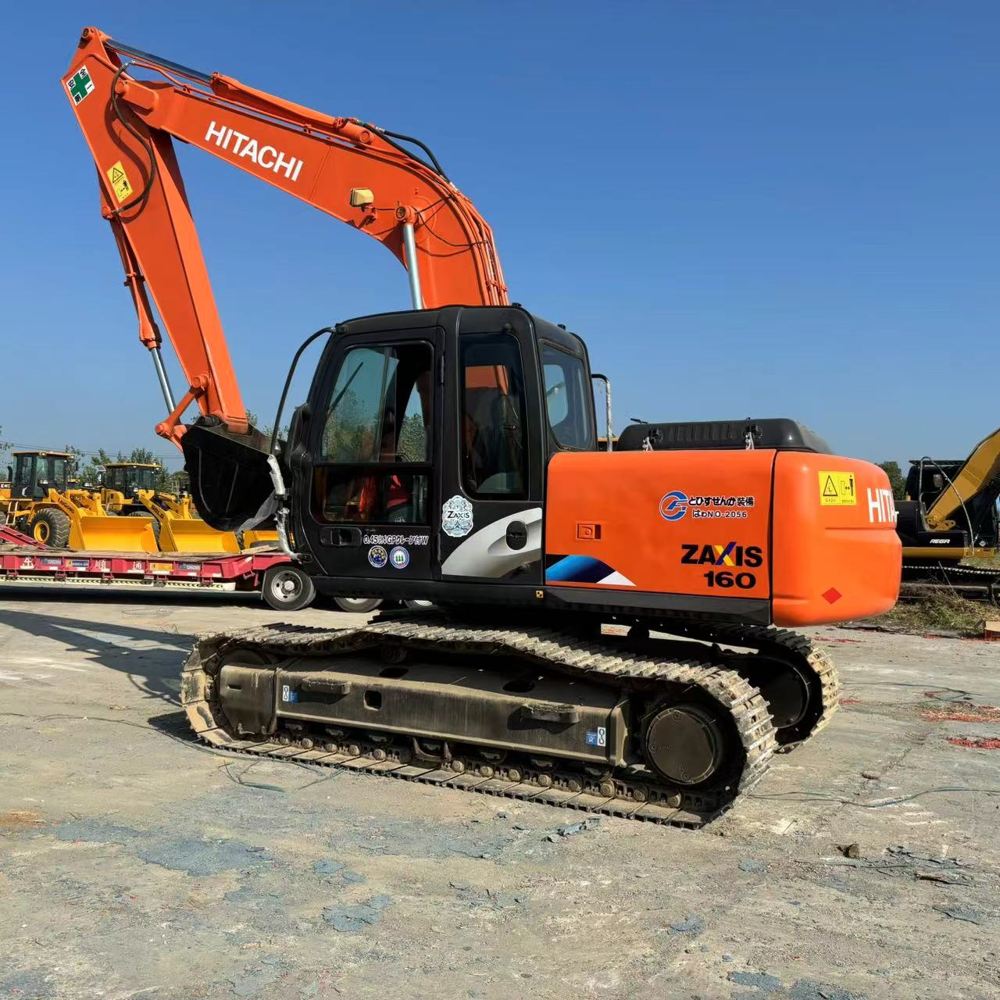

Refurbished Hitachi Zaxis 160 Excavator
The Hitachi Zaxis 160 Excavator is a compact yet powerful machine designed to handle a wide range of applications in construction, demolition, and material handling. Known for its impressive fuel efficiency, excellent hydraulic performance, and ease of operation, the Zaxis 160 offers reliability and versatility in tight spaces and challenging work environments. When refurbished, the Zaxis 160 continues to deliver the same high-level performance as a new unit, but at a more affordable price, making it an ideal choice for businesses looking to balance quality and cost.
Honestly, it's almost impossible to buy a brand new excavator from China. They either don't exist or are made in China. If a Chinese seller tells you their Caterpillar/Komatsu/Volvo/Kobelco/Hitachi is brand new, they're lying. Therefore, a refurbished excavator is your best bet.

Here are the detailed specifications for a refurbished Hitachi Zaxis 160 excavator (ZX160LC-6 or ZX160LC-3), ideal for your technical documentation and comparative spec work:
Operating Weight and Dimensions
- Operating Weight: ~17,700–18,100 kg
- Transport Length: ~8.7–9.0 meters
- Transport Width: ~2.59–2.99 meters
- Transport Height: ~2.9–3.0 meters
- Tail Swing Radius: ~2.5–2.7 meters
- Track Width: 600 mm standard
- Undercarriage: Long carriage (LC) configuration
Engine and Powertrain
- Engine Model: Isuzu AR-4JJ1X (Tier 3 or Stage IIIA compliant)
- Rated Power Output: ~90–93 kW (121–125 hp) @ 2,000 rpm
- Fuel Tank Capacity: ~300 liters
- Travel Speed: ~3.5–5.5 km/h
- Swing Speed: ~11 rpm
- Drive Type: Hydrostatic with planetary final drives
Hydraulic System
- Main Pump Type: Dual axial piston pumps with HIOS III hydraulic system
- Flow Rate: ~2 × 200–220 L/min
- System Pressure: Up to 34.3 MPa
- Hydraulic Oil Capacity: ~250–300 liters
- Efficiency Features:
- Boom regenerative circuit
- Swing priority valve
- Auto hydraulic warm-up
- Fuel-saving ECO mode
Performance Metrics
- Bucket Capacity: ~0.8–1.0 m³ (SAE heaped)
- Max Digging Depth: ~6.0–6.3 meters
- Max Reach (Horizontal): ~9.5–10.0 meters
- Max Dump Height: ~6.5 meters
- Bucket Digging Force: ~120–130 kN
- Arm Digging Force: ~90–100 kN
Cab and Operator Features
- Cab Type: ROPS/FOPS certified
- Display: Multifunctional LCD monitor with diagnostics and ECO gauge
- Controls: Pilot-operated joysticks with auxiliary hydraulic circuit
- Comfort: Heated air-suspension seat, HVAC, low-noise cab
- Visibility: Wide glass area, LED work lights, enhanced right-side visibility
Attachments Compatibility
- Standard Bucket: ~0.8–1.0 m³
- Optional Tools: Hydraulic breaker, demolition shear, ripper, compactor
- Quick Coupler: Hydraulic or manual quick hitch
Refurbishment Scope
Refurbished ZX160 units typically include:
- Engine Overhaul: Turbocharger, injectors, cooling system
- Hydraulic Restoration: Pump recalibration, valve block testing, hose replacement
- Electrical Diagnostics: Monitor, sensors, wiring harness
- Cab Reconditioning: Seat, joysticks, HVAC, repainting
- Structural Repairs: Boom/bucket welding, bushing replacement, undercarriage rebuild
Overview of the Hitachi Zaxis 160 Excavator
The Hitachi Zaxis 160 is a mid-sized, tracked hydraulic excavator known for its compact size, making it a perfect choice for applications in confined or congested work environments. Despite its smaller footprint, the Zaxis 160 delivers powerful performance, making it ideal for both light and heavy-duty tasks such as digging, grading, trenching, and material handling.
Refurbishing a Zaxis 160 involves a thorough process of reconditioning and replacing worn-out components with genuine Hitachi parts. This ensures that the machine meets or exceeds factory specifications, allowing businesses to enjoy the same reliability and productivity as a new unit at a significantly lower cost.
Key Specifications of the Hitachi Zaxis 160 Excavator
The Zaxis 160 is designed to offer powerful performance and precision while maintaining a compact design that allows for operation in tight spaces. Here are the key specifications:
-
Operating Weight: Approximately 16,000 - 18,000 kg (35,275 - 39,683 lbs)
-
Engine Power: 118 hp (88 kW)
-
Max Digging Depth: Up to 5.7 meters (18.7 feet)
-
Maximum Reach: 8.3 meters (27.2 feet)
-
Bucket Capacity: Typically 0.8 - 1.0 cubic meters (28 - 35 cubic feet)
-
Fuel Tank Capacity: Around 200 - 250 liters (53 - 66 gallons)
-
Travel Speed: Up to 5.5 km/h (3.4 mph)
These specifications provide the Zaxis 160 with the capability to handle a variety of tasks, from digging and lifting to grading and material handling, while keeping operational costs low with a fuel-efficient engine.
Performance and Efficiency of the Zaxis 160
The Zaxis 160 is engineered for efficiency and power, making it a strong performer in both urban and rural job sites. Its hydraulic system ensures that it can tackle tough tasks while maintaining fuel economy, making it a cost-effective choice for operators.
Performance Highlights:
-
Efficient Hydraulic System: The Zaxis 160 is equipped with an advanced hydraulic system that ensures smooth and precise control of the boom, arm, and bucket. This allows for faster cycle times and greater productivity when handling tough tasks.
-
Fuel Efficiency: One of the standout features of the Zaxis 160 is its fuel-efficient engine. Designed to minimize fuel consumption without compromising power, the Zaxis 160 helps businesses lower operational costs while maintaining high levels of productivity.
-
Powerful Digging and Lifting: With a strong engine and efficient hydraulics, the Zaxis 160 is more than capable of handling heavy-duty tasks such as deep trenching, material lifting, and site clearing. Its impressive digging depth and reach make it ideal for a range of applications.
-
Responsive Control: The Zaxis 160 offers excellent operator control, making it easy to maneuver in tight spaces and perform precise tasks. The responsive and smooth controls allow operators to work efficiently and safely.
Durability and Longevity of the Zaxis 160
The Hitachi Zaxis 160 is built to endure the demands of tough work environments, ensuring long-lasting durability and reliability. Whether working on uneven ground, in challenging weather conditions, or with heavy materials, the Zaxis 160 is designed to provide years of dependable service.
Durability Features:
-
Strong Undercarriage: The undercarriage of the Zaxis 160 is designed to withstand the rigors of rough terrain and heavy loads. The tracks, rollers, and sprockets are built for long wear, ensuring smooth operation even on uneven surfaces.
-
Reliable Engine: Powered by a durable engine, the Zaxis 160 is designed for high performance and long service life. With regular maintenance, this engine can deliver thousands of hours of efficient performance, making it a valuable asset for businesses.
-
Rugged Hydraulic System: The hydraulic system of the Zaxis 160 is designed to perform reliably under high pressure, even in demanding work environments. Its durable hydraulic components help minimize downtime and maintain productivity.
Comfort and Safety of the Zaxis 160
Operator comfort and safety are crucial factors in the design of the Zaxis 160. The excavator features a spacious and ergonomic cabin, noise and vibration reduction features, and several safety components to enhance the overall working experience for operators.
Comfort and Safety Features:
-
Ergonomic Cabin: The Zaxis 160 is equipped with a spacious cabin that offers excellent visibility and ergonomic controls. The adjustable seat and easy-to-reach controls help reduce operator fatigue during long shifts.
-
Noise and Vibration Reduction: The cabin is designed to reduce noise and vibration, creating a more comfortable and quieter working environment. This feature is especially beneficial for operators working for extended periods in noisy conditions.
-
Safety Features: The Zaxis 160 is designed with operator safety in mind. It is equipped with Roll Over Protection (ROPS) and Falling Object Protection (FOPS) to protect the operator in hazardous environments. Additionally, the machine's low center of gravity enhances stability when working on uneven terrain.
Versatility and Attachments for the Zaxis 160
The Hitachi Zaxis 160 is highly versatile and can be equipped with a wide variety of attachments to handle different tasks. Whether you're digging, lifting, grading, or demolishing, the Zaxis 160 can be adapted to suit the job.
Common Attachments for the Zaxis 160:
-
Buckets: The Zaxis 160 can be fitted with various bucket types, including general-purpose, heavy-duty, and grading buckets. These buckets typically range from 0.8 to 1.0 cubic meters (28 - 35 cubic feet), making them perfect for digging, material handling, and grading.
-
Hydraulic Breakers: For demolition applications, the Zaxis 160 can be equipped with hydraulic breakers, which can easily break concrete, rock, and other hard materials.
-
Augers: Auger attachments are ideal for drilling precise holes for foundations, posts, or other applications that require deep, narrow holes.
-
Grapples: For lifting and handling materials like scrap metal, logs, or debris, the Zaxis 160 can be fitted with grapple attachments.
-
Quick Couplers: Quick couplers allow operators to quickly change attachments without needing to leave the operator's seat, reducing downtime and improving productivity.
Benefits of Purchasing a Refurbished Hitachi Zaxis 160 Excavator
Buying a refurbished Zaxis 160 provides a number of advantages, especially for businesses looking to reduce capital costs without sacrificing quality.
Key Benefits:
-
Cost Savings: Refurbished Zaxis 160 excavators are more affordable than new models, offering a high-performing machine at a fraction of the price.
-
Thorough Reconditioning: Refurbished Zaxis 160 units undergo a detailed inspection and reconditioning process to ensure they meet or exceed factory standards. Worn-out parts are replaced with genuine Hitachi components, ensuring reliability and performance.
-
Warranty: Many refurbished units come with a warranty, providing peace of mind for businesses. The warranty ensures that the excavator will continue to perform reliably after purchase.
-
Environmental Responsibility: Purchasing refurbished equipment is an environmentally friendly option. By extending the life of existing machinery, businesses can help reduce waste and support sustainability in the heavy equipment industry.
Maintenance Tips for the Hitachi Zaxis 160 Excavator
Regular maintenance is key to ensuring the Zaxis 160 performs optimally for years to come. Below are some essential maintenance recommendations:
Maintenance Recommendations:
-
Engine Maintenance: Regularly check and change the engine oil, replace air filters, and monitor coolant levels to prevent overheating and keep the engine running smoothly.
-
Hydraulic System: Inspect hydraulic hoses for leaks, and replace hydraulic filters as needed. Regular maintenance of the hydraulic system ensures smooth operation and minimal downtime.
-
Undercarriage: Regularly inspect the undercarriage for signs of wear, particularly the tracks, sprockets, and rollers. Timely replacement of damaged components helps avoid further damage.
-
Attachments: Check attachments like buckets, grapples, and augers for signs of wear and tear. Replace or repair damaged parts to maintain efficient performance.
Conclusion
The Hitachi Zaxis 160 Excavator is a powerful, efficient, and reliable machine that offers great performance for a variety of construction and material handling tasks. By purchasing a refurbished Zaxis 160, businesses can enjoy the same capabilities as a new unit at a significantly lower cost. With regular maintenance, the Zaxis 160 can provide years of dependable service, making it an excellent investment for any construction or excavation project.
Our Commitment
- 2 years / 4000 hours warranty.
- EPA certified.
- No sweatshop labor.
Contacts

- [email protected]
- Youtube Instagram Facebook
- Navigation: G206 (Sishu Bridge) in Changfeng County, Hefei City, Anhui Province, 200 meters north to the east